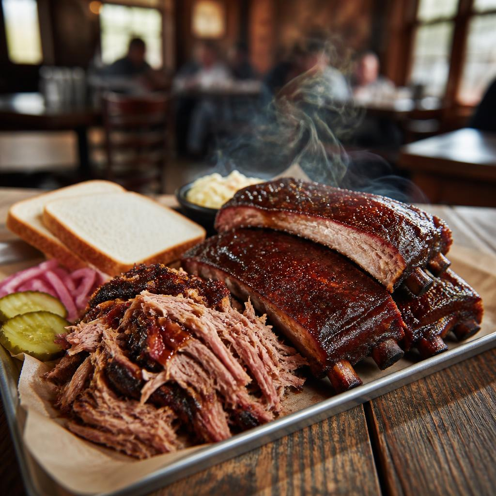

Marion County · Tennessee
Jasper,
in the valley.
A small Tennessee town tucked between the ridgelines, where the road opens up and the valley does the talking.
Get to know JasperThe Sequatchie Valley
35°04′ N · 85°37′ W
North of Chattanooga, south of the hurry.
Jasper is the county seat of Marion County.
A pocketful of context 01 / 04
Quick facts
- 01Known as“Gateway to the beautiful Sequatchie Valley”
- 02Population3,612 2020 Census
- 03Tennessee became a state1796

AT THE TABLEJASPER, TN
A good reason to linger 02 / 04
Jasper
barbecue.
Follow your appetite into town. Barbecue is among the local dining options in Jasper—a satisfying pause between valley views and the next stretch of road.
Leave room for the scenic route.Statewide, from Nashville 03 / 04
The leader
Bill Lee
Governor of Tennessee
A voice in the treetops 04 / 04
State bird
Tennessee's Northern Mockingbird: a quick study in song, often heard before it's spotted.
Tap the bird and listen with your eyes.
Your pocket field guide
Things I like.
Save a few things to remember about Jasper. Your notes stay right here while this page is open.
Press Enter or choose Add. Empty notes are skipped.
- Your list is waiting for its first little discovery.